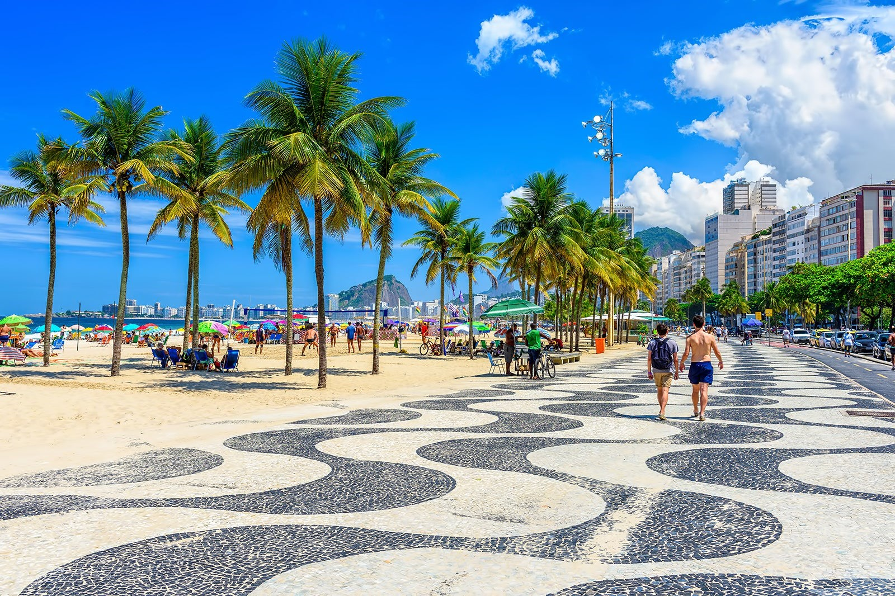
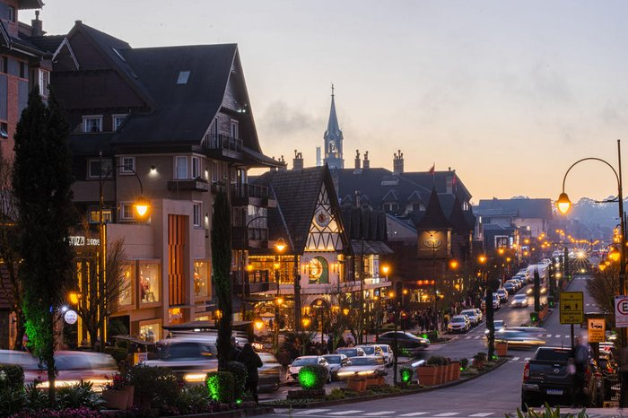
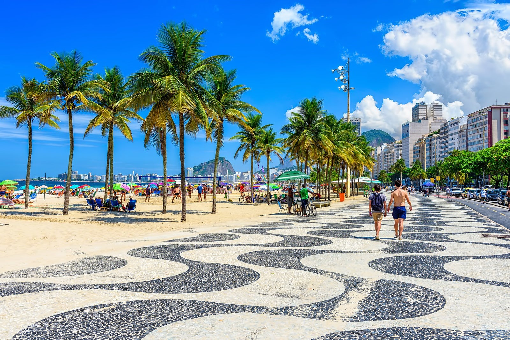
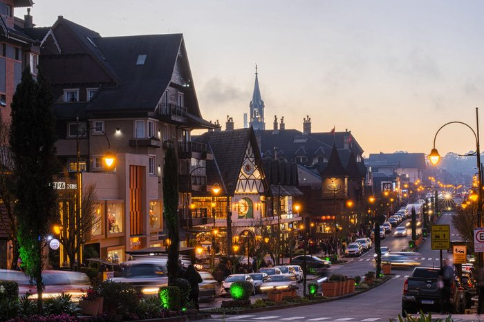

O Cristo Redentor
Para quem está curioso em descobrir qual o ponto turístico mais visitado do Brasil, o Cristo
Redentor, no alto do Morro do Corcovado, no Rio de Janeiro, é considerada a principal atração
turística do país.
Praia Copacabana
Copacabana é tudo aquilo que as pessoas falam (até mais). Apesar da
extensão de pouco mais de 4 quilômetros, o bairro conta com uma vida que
pulsa do nascer do sol à madrugada dos bares e restaurantes da região. A
beleza sem igual e os programas de praia são apenas alguns dos atrativos do
lugar, que oferece várias opções de lazer, cultura, ótima gastronomia e muito
mais.
Gramado
Gramado é uma cidade com uma estância de montanha situada no estado mais a sul do Brasil, Rio Grande do Sul. Influenciada pelos colonos alemães do século XIX, a cidade possui um toque bávaro com chalés alpinos, chocolateiros e lojas de artesanato. Gramado é também conhecida pelas suas exibições de luzes de Natal e pelas hortênsias em flor na primavera.
Natal
Natal é a capital do estado de Rio Grande do Norte, na extremidade nordeste do Brasil. É conhecida pelas extensas dunas de areia costeiras e pelo Forte dos Reis Magos, em forma de estrela, uma fortaleza portuguesa do século XVI na foz do rio Potengi. A norte do rio, Genipabu é uma área de enormes dunas com uma lagoa de água doce. A autoestrada Via Costeira liga uma faixa de 15 km de praias a sul do forte.
Lençóis Maranhenses
O Parque Nacional dos Lençóis Maranhenses é uma área protegida na costa atlântica norte do Brasil. É conhecido pela sua vasta paisagem desértica de grandes dunas de areia branca e pelas lagoas sazonais de água da chuva.A Lagoa Azul e a Lagoa Bonita são duas das maiores lagoas. O ecossistema diversificado do parque inclui pântanos de mangais. As cidades vizinhas de Barreirinhas e Santo Amaro do Maranhão servem de porta de entrada para o parque
 


